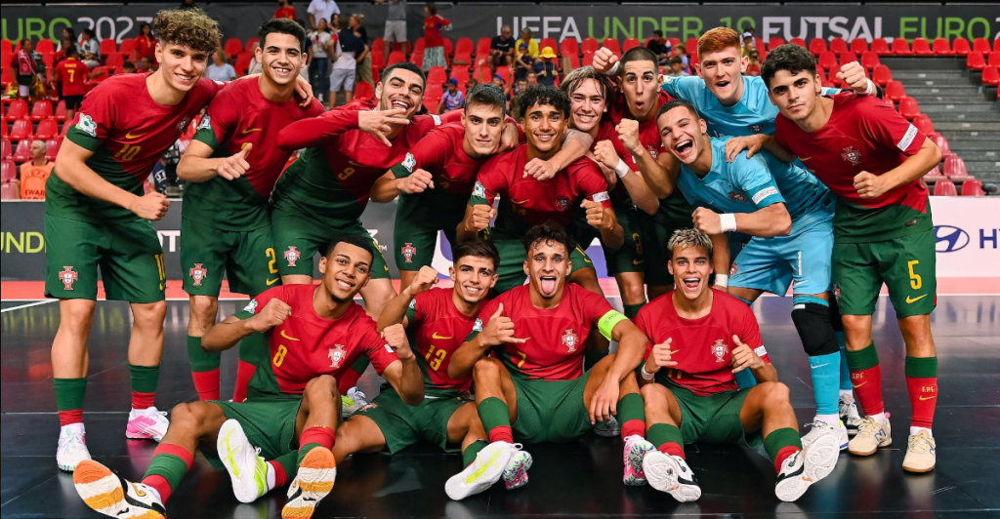
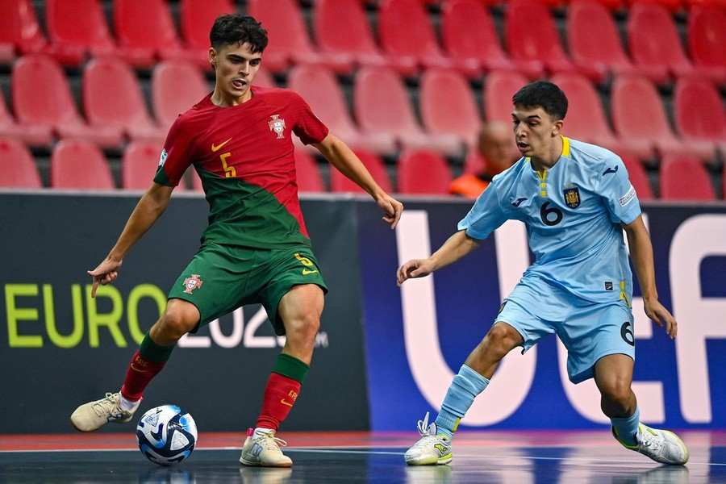

>> Portugal and Spain Secure Thrilling Victories to Set Up UEFA Under-19 Futsal EURO 2023 Final Showdown

- The UEFA European Under-19 Futsal Championship is heating up as Portugal and Spain claim hard-fought victories, setting
the stage for an epic final showdown. With Spain aiming to maintain their stranglehold on the competition since 2019,
much anticipation surrounds the final clash.
- Portugal’s journey to the final was sealed by captain Lúcio Rocha’s last-minute heroics, securing a 3-2 victory against
a resilient Slovenian side. Despite missing the influential Andraž Gregorič, Slovenia put up a valiant fight, spurred on
by their passionate blue-clad supporters. Portugal, having breezed through the group stage with a perfect record,
asserted their dominance with a solo strike by Tomás Colaço in the first half. However, Slovenia responded swiftly with
Lovro Skrinjar converting a corner from Vid Kos.
- The tide turned in Portugal’s favor after halftime when Tiago Macedo delivered a cross from the right, only to see Anže
Žlindra inadvertently deflect the ball into his own net under pressure from Pedro Santos. Slovenia, refusing to be
outdone, leveled the score with a low finish from Luka Čop, almost taking the lead moments later. It was Portugal’s
Lúcio Jr. who played the role of the hero, finding the net late in the game to send his team to their second consecutive
final.
- Key Stat: Portugal now holds the record for the most all-time wins in this competition, boasting an impressive 20
victories.
- Portugal’s coach, José Luís Mendes, acknowledged the challenge posed by Slovenia, stating, “I think it was a fair
result. Slovenia had a very strategic style of long balls every time. We had a very attacking game, a lot of shots on
goal, it is a pity we couldn’t score earlier.” Rúben Carrilho, a player for Portugal, highlighted the unpredictable
nature of futsal, saying, “That’s what futsal is about, sometimes it’s easy and sometimes it’s hard.”
- Slovenia’s coach, Tomislav Horvat, commended his team’s effort and resilience, saying, “My guys gave everything and I am
satisfied. OK, with one minute to go … but we gave everything we had and I am very, very proud of this team.”
- On the other side of the bracket, Spain got off to a flying start against Ukraine, securing a 3-2 victory. Spain’s
Adrián Tapias opened the scoring with a well-placed shot after intercepting a pass, while Juanico extended the lead,
setting up Roger Panadès for a confident finish.

- Ukraine, seeking redemption after their 2022 semi-final defeat to Portugal, pulled one back late in the first half
through Dmytro Rybitskyi’s conversion of Maksym Malynovskyi’s corner. Ukraine had opportunities to level the score, with
Rubén Rodó hitting the post and Roger’s follow-up saved by Dmytro Diachenko.
- In the early stages of the second half, Ukraine completed their comeback, with Andrii Yelishev assisting Denys
Snitsarenko for a cool finish. However, Spain responded almost immediately, as Victor Ramos capitalized on a Javi
Martínez corner to secure a 3-2 lead. This turned out to be the decisive goal, setting up a final clash against
Portugal, reminiscent of last year’s final.
- Key Stat: Spain aims to continue their dominance by winning every edition of the tournament since 2019, mirroring their
success in the UEFA Women’s Futsal EURO earlier this year.
Source : Click
here